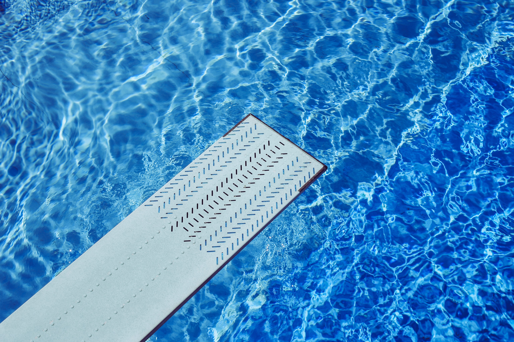

#스포츠 #오메가버스 #연하공 #순정공 #다정수 #연상수 #임신수
대쉬 작가 이젠. 권재경. 정지헌
한때 유망한 수영선수였던 지헌은 부상을 이유로 일찌감치 은퇴하여 지금은 스포츠 에이전시 회사에서 성실히 일하고 있다. 현재 스포츠 마케팅 시장의 가장 큰 관심사는 다름 아닌 권재경으로, 그를 잡기 위한 에이전시들의 물밑전쟁이 치열한 상황이다. 그 와중에 상사로부터 어떻게든 권재경 측과 자리를 마련해보라는 명령을 받은 지헌은 십 년 전에 잠깐 같은 수영장에 다녔다는 하잘것없는 인연을 이용해 기적적으로 자리를 만드는 데 성공한다. 하지만 막상 만나기로 한 자리에 나가보니 권재경은 계약 조건엔 관심도 없고 뜬금없이 지헌의 형질에 대해서만 묻는데….
“형, 나는 천이백 미터에서 시작했어요. 십 년 동안 나 혼자 천백 미터, 천 미터, 그렇게 좁혀왔다고요. 그동안 너무 멀어서 형 모습 보이지도 않았는데, 이제 보이기 시작했어. 보이기 시작하면 거의 다 온 거예요. 백 미터 남은 거라고요. 마지막 백 미터는 원래 무조건 대쉬예요. 형도 알죠?”